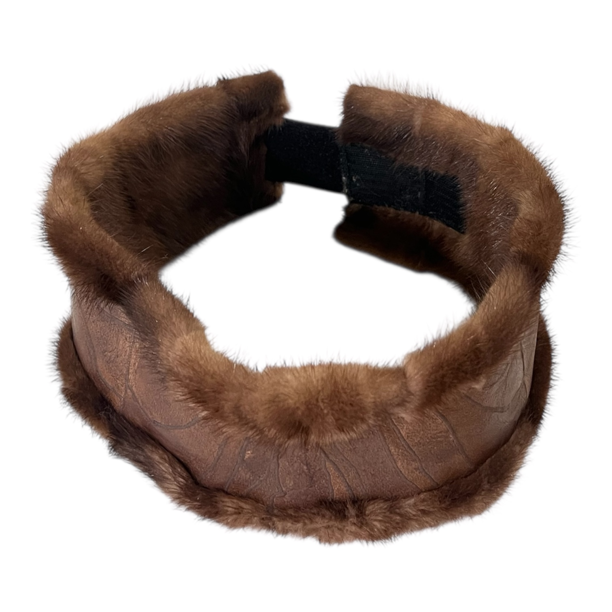
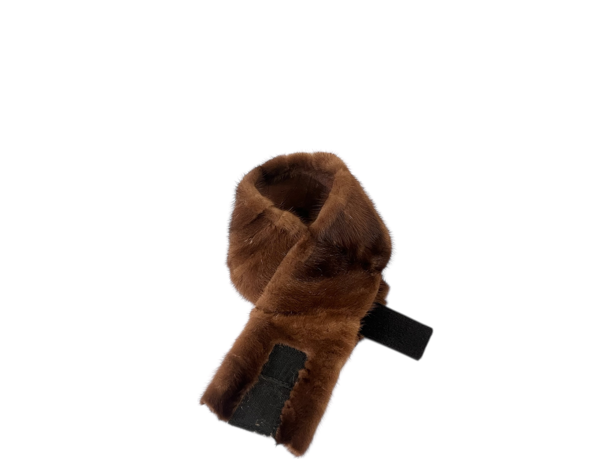
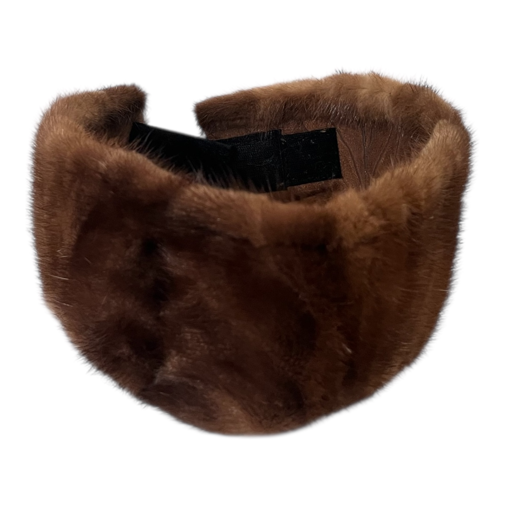

The Two-Faced Mink Headband™
Same rules. Higher up.
Built from the same mink head-only pelt construction as the Two-Faced Mink Belt™, this headband carries identical duality — luxury on one side, restraint on the other.
Fully reversible, it allows you to switch between mink fur and tanned leather depending on mood, setting, or intention. Designed to sit clean and structured around the head, it mirrors the belt’s architecture — just elevated.
This is not an accessory add-on. It’s the upper half of a uniform.
Part of the Two-Faced system. Designed to be worn together or alone.
Details
- Mink head-only pelt construction
- Fully reversible — fur ↔ tanned leather
- Structured leather interior for shape retention
- Sculpted to sit securely without pressure points
- Ethically sourced, handcrafted in California
Designed to Pair With
The Two-Faced Mink Belt™
Worn together, the belt and headband form a matched system — one grounding the body, the other framing the face. Identical materials. Identical attitude. Different levels of disrespect.
Sold separately. Best worn as a set.